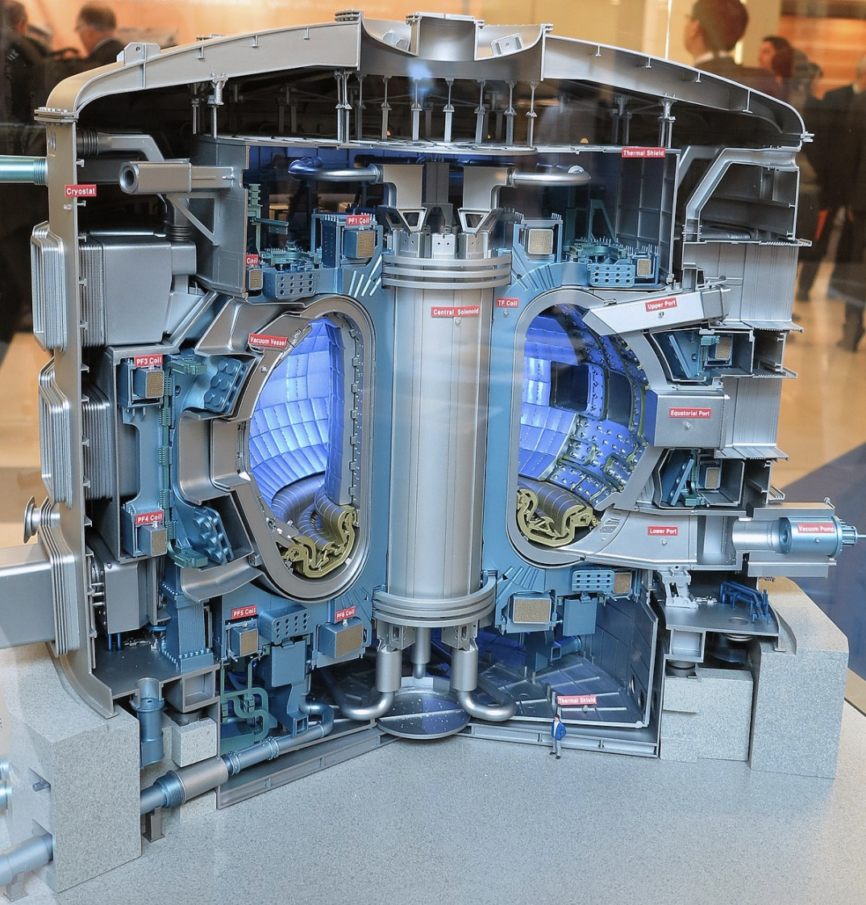
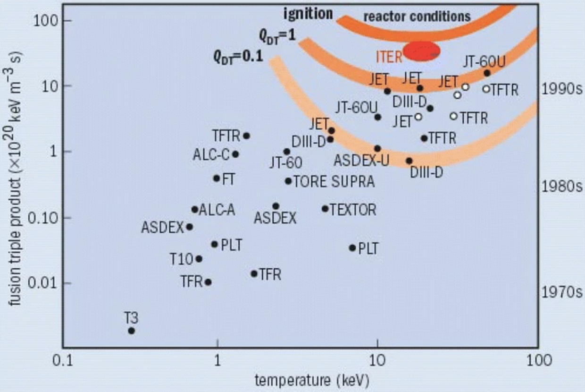

A fusion company achieves net energy gain
The international fusion megaproject ITER. (Image)
_(12219071813)_(cropped).jpg#/media/File:ITER_Exhibit_(01810402)_(12219071813)_(cropped).jpg){kind=link}
The holy grail of fusion research is a fusion reactor that generates more energy than it takes to make fusion happen. This is measured by the energy gain, “Q,” the ratio of fusion energy produced to the energy used to achieve ignition. So far, no fusion reactor has achieved Q > 1, or net energy gain. However, many national labs and startup companies are in hot pursuit.
A handful of fusion companies, including Commonwealth Fusion Systems, Tokamak Energy, and Zap Energy, have announced ambitious plans to demonstrate Q > 1 by 2025. Others, including Portfolio Company Focused Energy, anticipate reaching this milestone by 2030.
Advances in key enabling technologies have brought the engineering challenges into the realm of feasibility, including high-temperature superconducting magnets, optics, lasers, metallurgy, and, importantly, computing power. Combined with an influx of government research funding and resources from private investors, we have high confidence that a group will demonstrate net energy gain by the end of the decade.
The current record for magnetic confinement fusion is Q = 0.67, set by the JET tokamak in the UK. The record for laser-driven fusion (inertial confinement fusion) is 0.7, assuming the experiment performed in Sept 2021 by the National Ignition Facility (NIF) is confirmed.
The Energy Gain (Q) achieved by magnetic confinement fusion experiments. Source: A. Horvath et al 2015 under CC
{kind=link}
Note that there are many definitions of net energy gain! Fusion research tokamaks JET and JT-60 have shown extrapolated energy gains of about 1.25. These results come from experiments that used deuterium-only fuel, which ignites at a higher temperature, and extrapolated the results to what would be observed with deuterium-tritium. It’s important to consider how the energy gain was calculated!